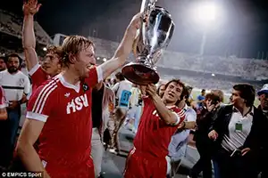
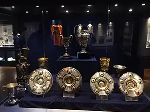
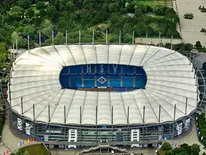
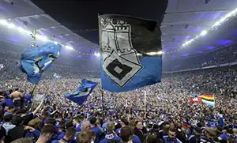
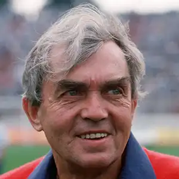
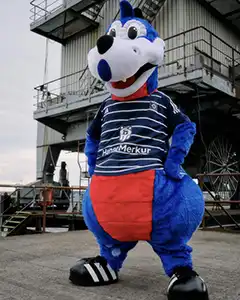
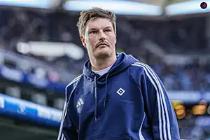

Gallery

Horst Hrubesch and Felix Magath Lift the Champions League Trophy 1983

The HSV Trophy Cabinet

HSV's Stadium - Volksparkstadion

Fans Celebrate the Club's Long-Awaited Return to the Bundesliga
HSV Capitain - Nicolai Remberg

Ernst Happel - HSV's Most Succesful Coach

Club mascot - Dino Hermann

Head Coach - Merlin Polzin